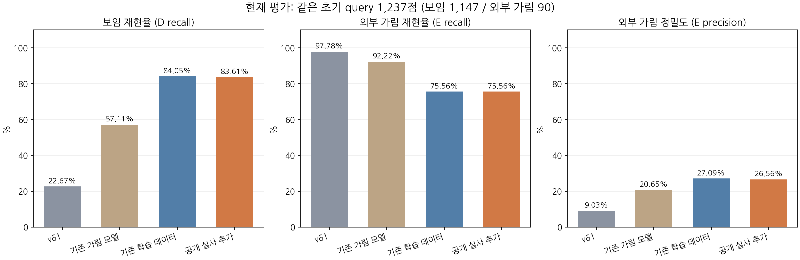
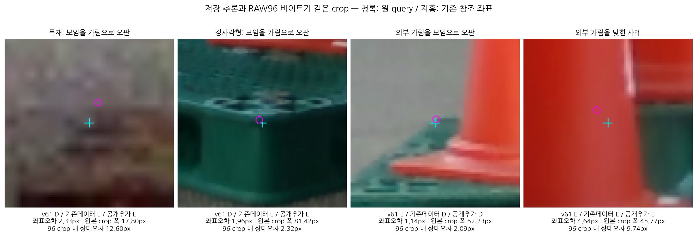

공개 실사 추가로 현재 평가 전체 개선을 확인하지 못했습니다. 추가 학습 없이 종료합니다.
동일 초기 query1237점: 보임1147 / 외부 가림90. 같은 초기값·각1000 update. 두 head를 고정한 뒤 현재 RGB, 두 예측을 고정한 뒤 GT/v61을 읽었습니다. 키포인트 위치·PnP·문턱 변경 없음.
| 모델 | D recall | E recall | E precision | 보류율 |
|---|---|---|---|---|
| v61 | 22.67% | 97.78% | 9.03% | 0.00% |
| 기존 가림 모델 | 57.11% | 92.22% | 20.65% | 14.31% |
| 기존 학습 데이터 | 84.05% | 75.56% | 27.09% | 0.00% |
| 공개 실사 추가 | 83.61% | 75.56% | 26.56% | 0.00% |

공개 실사 추가 전후 D정답964→959, E정답68→68. 목재 순+14점·정사각형 순−19점. 공개 DEV 표면점 E357/398(89.70%)는 현재 native 키포인트 성능이 아닙니다. 현재 외부 가림 판정256점 중 실제 가림은68점입니다.

원 query·L 유지. 작은 crop에서는 원본 좌표2.33px도 입력 안에서12.60px입니다. 상대오차2.32px인 정사각형에서도 보임 오판이 남습니다. 전체 실패의 원인을 이12사례만으로 확정하지 않습니다.
고정12개 전체 갤러리 · 상세 보고서·재현·원표 링크
공개 표면점 AUX 감독은 학습됐지만 현재 native MAIN 과제로의 전체 개선은 없었습니다. 표면 내부의 보수적 감독, 가상 키포인트 보임 정의, 실사 외관·경계·crop 정보의 차이가 남습니다. 새 독립 블라인드 검증은 아니며 기존 가림 모델의 CAL/반복노출 이력도 유지합니다. SELF는 별도이고 upstream 기하학 필터 방침을 유지합니다.
마지막1회 비교 완료. 추가 재학습·문턱 변경·자동 실험 재개 없음.